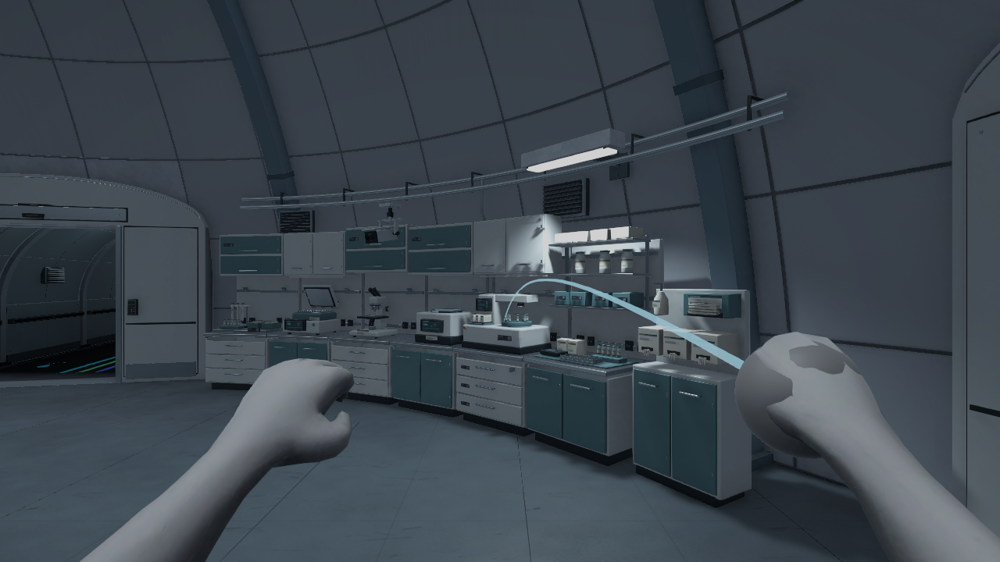
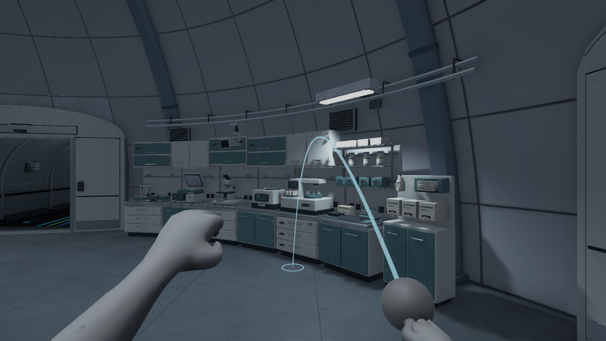
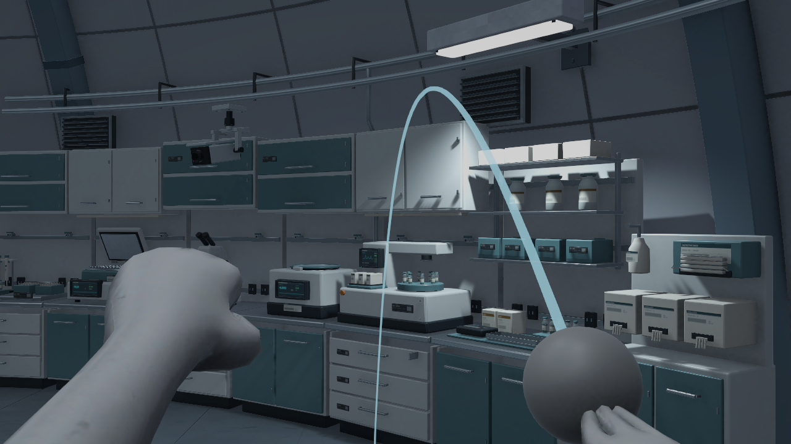
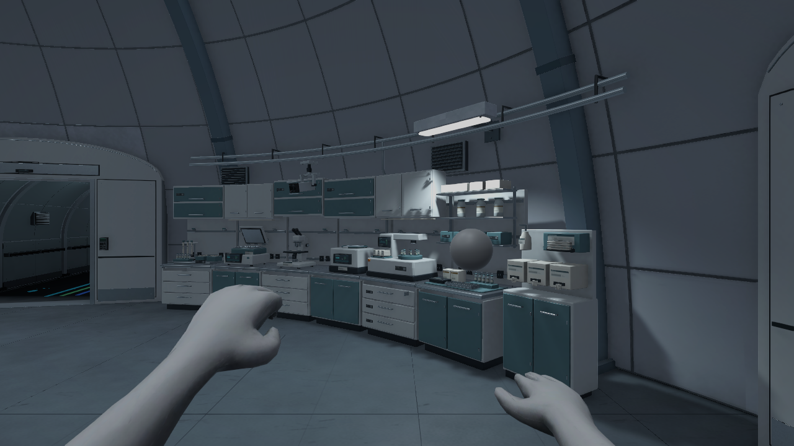
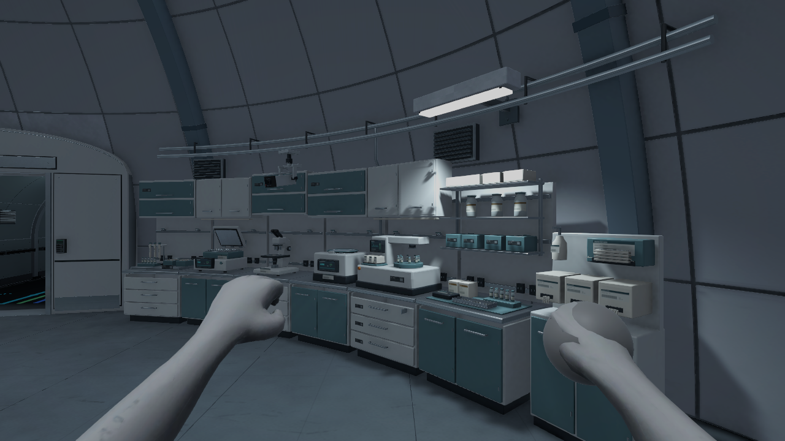
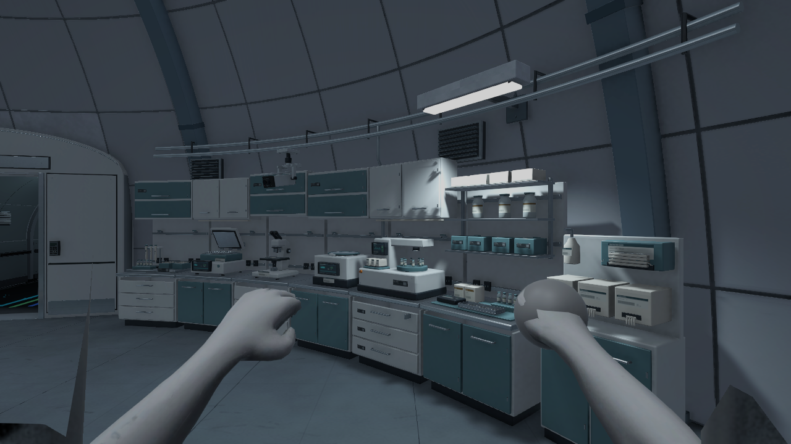
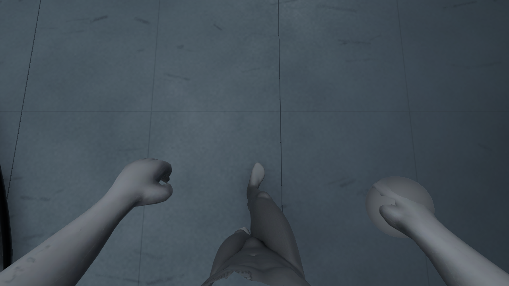
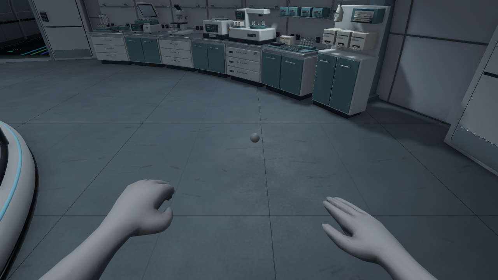

2026-11-17 · 송예찬 · 실제 B5 플레이 화면. 위 던지기12m/s, 아래 던지기6m/s·35°. 아래 손에서 시작하는 상승 궤적과 확대 시 손 표시를 보완했습니다. 걷기·달리기는 기존 VARCO 클립에서 추출한 손 경로를 하체 위상에 맞춥니다.
전용 아래 던지기 클립은 없어 절차적 동작을 보완했습니다. 손 모델과 물건별 쥐기 자세는 임시 아트입니다. 상세 기록







